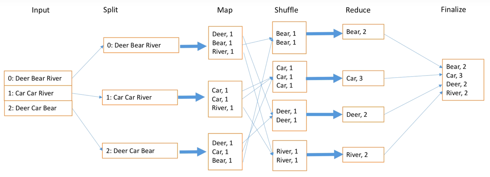
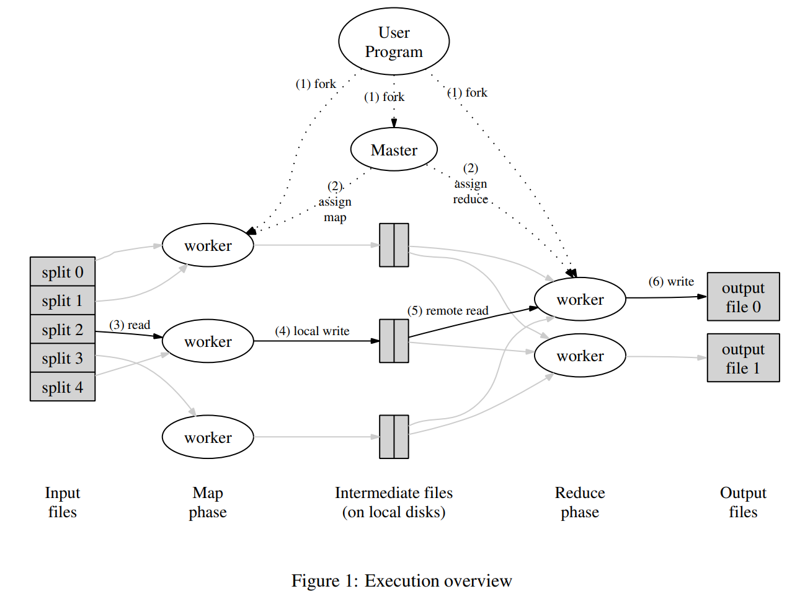

MapReduce 是一个编程模型，也是一个处理和生成超大数据集的算法模型的相关实现。MapReduce 设计了一个新的抽象模型，使用这个抽象模型，我们只要表述我们想要执行的简单运算即可，而不必关心并行计算、容错、数据分布、负载均衡等复杂的细节，这些问题都被封装在了一个库里面。MapReduce 架构的程序能够在大量的普通配置的计算机上实现并行化处理。
用户首先创建一个 Map 函数处理一个基于 key/value pair 的数据集合，输出中间的基于 key/value pair 的数据集合；然后再创建一个 Reduce 函数用来合并所有的具有相同中间 key 值的中间 value 值。使用 MapReduce 模型，再结合用户实现的 Map 和 Reduce 函数，我们就可以非常容易的实现大规模并行化计算。
具体地，
函数传递的类型被严格限制为
xxxxxxxxxxmap(k1,v1) ->list(k2,v2)reduce(k2,list(v2)) ->list(v2)我们来看一个串行统计词频的 mapReduce 函数例子。
客户端
xxxxxxxxxxfunc Map(filename string, contents string) []mr.KeyValue { // function to detect word separators. ff := func(r rune) bool { return !unicode.IsLetter(r) }
// split contents into an array of words. words := strings.FieldsFunc(contents, ff)
kva := []mr.KeyValue{} for _, w := range words { kv := mr.KeyValue{w, "1"} kva = append(kva, kv) } return kva}
func Reduce(key string, values []string) string { // return the number of occurrences of this word. return strconv.Itoa(len(values))}服务端
xxxxxxxxxxfunc main() { if len(os.Args) < 3 { fmt.Fprintf(os.Stderr, "Usage: mrsequential xxx.so inputfiles...\n") os.Exit(1) }
mapf, reducef := loadPlugin(os.Args[1])
// // read each input file, // pass it to Map, // accumulate the intermediate Map output. // intermediate := []mr.KeyValue{} for _, filename := range os.Args[2:] { file, err := os.Open(filename) if err != nil { log.Fatalf("cannot open %v", filename) } content, err := ioutil.ReadAll(file) if err != nil { log.Fatalf("cannot read %v", filename) } file.Close() kva := mapf(filename, string(content)) intermediate = append(intermediate, kva...) } // 经上述 Map 处理后, intermediate 中存储了各单词的信息 // 形如 {(A, 1), (B, 2), ..., (A, 1),...} // 每个单词可重复出现，且计数均为1 // // a big difference from real MapReduce is that all the // intermediate data is in one place, intermediate[], // rather than being partitioned into NxM buckets. //
// 这一步是将 intermediate 中相同单词放在相邻的位置 // 经此步骤处理后 intermediate 存储的内容形如 {(A, 1), (A, 1), ..., (B, 2), ...} sort.Sort(ByKey(intermediate))
oname := "mr-out-0" ofile, _ := os.Create(oname)
// // call Reduce on each distinct key in intermediate[], // and print the result to mr-out-0. // i := 0 for i < len(intermediate) { // 此步骤找到 intermediate 相邻且相同的单词的最后一个下标(j-1) j := i + 1 for j < len(intermediate) && intermediate[j].Key == intermediate[i].Key { j++ } // 此步骤将 intermediate 中相同单词存储在临时列表 values 中 // 例如对于单词A，values 形如 {(A, 1), (A, 1), ..., (A, 1)} values := []string{} for k := i; k < j; k++ { values = append(values, intermediate[k].Value) } // Reduce 函数统计 values 中该单词出现的次数 // 返回 A 100 output := reducef(intermediate[i].Key, values)
// this is the correct format for each line of Reduce output. fmt.Fprintf(ofile, "%v %v\n", intermediate[i].Key, output)
i = j }
ofile.Close()}根据上述实例，我们可以看出 MapReduce 主要由以下步骤实现：

通过将 Map 调用的输入数据自动分割为 M 个数据片段的集合，Map 调用被分布到多台机器上执行。输入的数据片段能够在不同的机器上并行处理。使用分区函数将 Map 调用产生的中间 key 值分成 R 个不同分区（例如，hash(key) mod R），Reduce 调用也被分布到多台机器上执行。分区数量（R）和分区函数由用户来指定。

上图的具体步骤为
实验描述
你的工作是实现一个分布式的MapReduce，由两个程序组成，即 coordinator 和 worker。只有一个 coordinator 进程，以及一个或多个并行执行的 worker 进程。在一个真实的系统中，工作程序会在一堆不同的机器上运行，但在这个实验中，你将在一台机器上运行它们。worker 将通过RPC与 coordinator 对话。每个 worker 进程将向 coordinator 请求一个任务，从一个或多个文件中读取任务的输入，执行任务，并将任务的输出写入一个或多个文件中。如果一个工作进程在合理的时间内没有完成其任务（在本实验室中，使用10秒），coordinator 应该注意到，并将相同的任务交给不同的工作进程。
一些规则
- Map 任务阶段应该把中间结果集的键分成
nReduce个 Reduce 任务的桶，其中nReduce是 Reduce 任务的数量 -- main/mrcoordinator.go 传递给 MakeCoordinator() 的参数。因此，每个 mapper 需要创建nReduce个中间文件，供 Reduce 任务使用。这里nReduce= 10。- Worker 实现应该把第X个 Reduce 任务的输出放在
mr-out-X文件中。- 一个
mr-out-X文件应该包含每个 reduce 函数输出的一行。这一行应该以Go"%v %v"的格式生成，并以 key 和 value 来调用。看一下 main/mrsequential.go 中注释为 "this is the correct format" 的那一行。如果你的实现过于偏离这个格式，测试脚本将会失败。- 你可以修改 mr/worker.go，mr/coordinator.go，和 mr/rpc.go。你可以临时修改其他文件进行测试，但要确保你的代码能在原始版本中运行；我们会用原始版本进行测试。
- Worker 应该将中间的 Map 输出放在当前目录下的文件中，你的 Worker 以后可以在那里读取它们作为 Reduce 任务的输入。
- main/mrcoordinator.go 希望 mr/coordinator.go 实现一个 Done() 方法，当 MapReduce 作业完全完成时返回 true；这时，mrcoordinator.go 将退出。
- 当作业完全完成时，worker 进程应该退出。实现这一点的一个简单方法是使用 call() 的返回值：如果 worker 未能联系到 coordinator，它可以认为 coordinator 已经退出了，因为作业已经完成，所以 worker 也可以终止。根据你的设计，你可能也会发现有一个 "please exit" 的伪任务，coordinator 可以将其交给 worker。
提示
中间文件的合理命名惯例是mr-X-Y，其中X是Map任务编号，Y是reduce任务编号。
Worker 的 Map 任务代码需要一种方法来将中间结果集的键/值对存储在文件中，以便在 Reduce 任务中正确读回。一种可能性是使用Go的encoding/json包。要将JSON格式的键/值对写到一个开放的文件中
xxxxxxxxxxenc := json.NewEncoder(file)for _, kv := ... {err := enc.Encode(&kv)并读回这样的文件
xxxxxxxxxxdec := json.NewDecoder(file)for {var kv KeyValueif err := dec.Decode(&kv); err != nil {break}kva = append(kva, kv)}Worker 的 Map 部分可以使用ihash(key)函数（在worker.go中）来为一个给定的键挑选reduce任务。
xxxxxxxxxxfilename count_of_wordspg-being_ernest.txt 24130pg-dorian_gray.txt 83498pg-frankenstein.txt 78329pg-grimm.txt 105203pg-huckleberry_finn.txt 120780pg-metamorphosis.txt 25528pg-sherlock_holmes.txt 108992pg-tom_sawyer.txt 77488ALL 623948参考流程1
map 任务队列和 reduce 任务队列在初始化时就可以定下来了，因为输入是输入文件数组和 NReduce reduce 任务数量，则可以得出对应的 NMap map 任务数量以及中间文件，结果文件的数量和命名
每个 worker 可以询问 master 领取任务，master 根据目前的总体状态(map 还是 reduce 还是 done)，给 worker 从任务队列中抽取任务并分配给该 worker，worker 根据任务类型，执行对应的 map/reduce 任务
master 还需要记录当前完成的 map 任务数和完成的 reduce 任务数，还需要记录一个总体状态，只有等最后一个 map 任务完成了，才能切换到 reduce 任务
master 还可以记录一个 worker 的状态map，用于记录 worker 的健康情况或当前信息，只有所有 worker 都完成任务后，worker 们才可以和 master 退出
本实验主要关注的几个问题及解决方案为：
| 关注问题 | 解决方案 | 实现文件 |
|---|---|---|
| 分割数据 | 输入数据以文件为单位进行分割 | |
| 集群调度 | Master分发模式 | src/mr/coordinator.go |
| 错误处理 | 心跳检测、worker写入临时文件 | src/mr/worker.go |
| 集群通信 | 采用 RPC 通信模式 | src/mr/rpc.go |